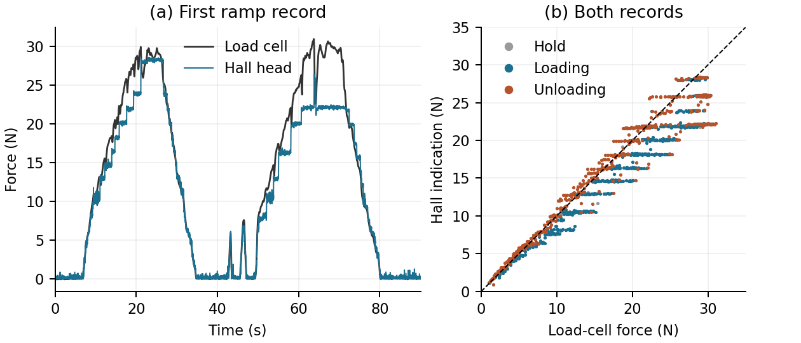

Hand-loading observations
Scope and setup
Series labels are synchronized presses (S), static controls on the same assembly (SC), exploratory ramps (SX), and held-out test (B).
The manual scale readings were approximate; their temporal correspondence to the Hall averaging windows was not independently verified. In the synchronized assembly the Hall head was not mechanically fastened to the load-cell platform. A later setup check showed support deflection under load, which was not quantified during the recorded trials. The indication differences therefore are not used to quantify the force accuracy of the head itself or identify a friction mechanism.
The centered manual series used a CRW-7024 zeroed with the 343 g Hall assembly in place. The synchronized series placed the head on a 111 g load-cell platform and applied hand force to the Hall tray. The setup.description in the preserved plan export specifies intended taped mounting; it does not describe the actual unfastened assembly. Recording notes describe the actual arrangement.
The S synchronized-press analysis rules were fixed before acquisition. SC was added after the S analysis, with its rules fixed before SC acquisition. SX had a separate exploratory plan from the outset. The later time-shift sensitivity is distinguished below. The separate 15-press directional-contrast experiment remains in manuscript Figure 4 and Supplementary Material S7; it is not the S series tabulated here.
Manual scale readings: all 18 pairs
For each press, the last complete 100-sample device window ending before the reading cue was paired with the entered scale indication. All 15 initial presses and three follow-up presses are shown. The follow-up used a new display zero and the same calibration. No synchronized scale stream or video was recorded. The difference column uses the stored unrounded readings, so rounded gram columns may not reproduce its last digit.
Sources: initial series and follow-up series. The records include window timing, scale entries and device output checks.
Synchronized presses: all 18 presses
Hall and load-cell device clocks were mapped to host UTC by linear regression. A press was detected above 0.3 kg for at least 1.5 s. Release was the last sample at or above 90% of the median force over the middle half of that interval. The analysis window was the final 1 s before release; a 3 s window was also evaluated. Onset was the last sample at or below 0.05 kg preceding the interval. Both systems used the 3 s ending 0.2 s before onset as unloaded reference. Hall indications used the frozen four-channel interpolation. These rules are in the preserved plan export.
The later timing sensitivity shifted the Hall windows by the median edge lag (-0.18 s, Hall minus load-cell edge time). Each edge was the rising 50% crossing of that system's own plateau. The lag-shifted column remains a sensitivity calculation; it does not replace the original window result.
Q is the magnitude of the two signed channel contrasts. Stored one-second, three-second and shifted-window values are in synchronized_press.json; reproduce_synchronized.py reconstructs them.
Static controls on the synchronized assembly
Each loaded record used its preceding unloaded record and the mean over 10-20 s of device time. Indication minus known mass times 0.00980665 N/g is listed for both systems. The four nearest-mass independent B placements are retained below for comparison; they used a different test arrangement and are not matched repetitions of SC.
Separate exploratory ramps
Two 90 s records each contained two slow centered loading and unloading ramps, approximately 0 to 3 kg in 10 s, a 2 s hold, and return to zero in 10 s. Both systems were referenced to the first 3 s of each record. At each load-cell sample, the Hall indication was averaged over +/-0.05 s around the time shifted by the median S lag. Loading, unloading and hold branches used the gradient of the five-sample smoothed load-cell force; an absolute gradient below 0.2 N/s was classified as hold.

Figure 1. Left: the first ramp record. Right: paired indications from both records, with branches shown separately. The dashed line denotes equal indications. These traces describe the two recorded indications on the combined assembly; they do not isolate the contribution of the head or support.
The stored summaries are in synchronized_press.json. Reproduction: python reproduce_synchronized.py. Figure regeneration: python plot_synchronized_ramps.py --output-dir figures.
Record links and analysis history
The raw index maps the capture IDs below to the compressed measurement files. The data dictionary defines the timestamp and channel fields. Initial manual capture: 66c0b8ea13c5411b95ba2c51c7ca6e9c; follow-up capture: 15a216a084594cd28d0df6cc6a5b0010.
The original frozen plan hashes are retained in synchronized_press_plan.json. The S, SC and SX roles are distinct:
- S: development_validation; analysis plan fixed before acquisition
- SC: control added after the S analysis; analysis fixed before acquisition
- SX: exploratory; reported descriptively